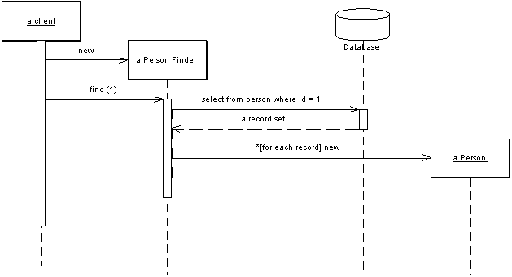

| Home | Articles | Talks | Links | Contact Me | ISA | ThoughtWorks |
An object that acts as a Gateway to a single record in a data source

Embedding database access code into in-memory objects can leave you with a fair few disadvantages. For a start it adds complexity. If your in-memory objects have business logic of their own, adding the database manipulation code is another aspect of complexity. Testing is awkward too, because if your in-memory objects are tied to a database tests are slower to run due to all the database access. You may have to access multiple databases with all those little annoying variations on their SQL.
A Row Data Gateway gives you objects that look exactly like the record in your record structure, but can be accessed with the regular programming mechanisms of your programming language. All the details of accessing the data source are hidden behind this interface.
A Row Data Gateway acts as an object that exactly mimics a single record, such as one database row. Each column in the database becomes one field in the Row Data Gateway. The Row Data Gateway will usually do any type conversion from the data source types to the in-memory types, but this type conversion is usually pretty simple. The Row Data Gateway holds the data about a row a client can then access the Row Data Gateway directly. The gateway acts as a good interface for each row of data. This approach works particularly well for Transaction Scripts.
With a Row Data Gateway you're faced with the questions of where to put the find operations that generate the Row Data Gateways. You can use static find methods, but that precludes polymorphism should you want to substitute different finder methods for different data sources. In this case it often makes sense to have separate finder objects. So each table in a relational database will have one finder class and one gateway class for the results.
Figure 1: Interactions for a find with a row based Row Data Gateway
It's often hard to tell the difference between a Row Data Gateway and an Active Record. The crux of the matter is whether there's any domain logic present, if so you have an Active Record. A Row Data Gateway should contain only database access logic, and no domain logic.
The choice of Row Data Gateway often comes in two steps, firstly whether to use a gateway at all and then whether to use Row Data Gateway or Table Data Gateway.
I use Row Data Gateway most often when I'm using a Transaction Script. In this case the Row Data Gateway nicely factors out the database access code and also allows it to be reused easily amongst different Transaction Scripts.
I don't use a Row Data Gateway when I'm using a Domain Model. If the mapping is simple then Active Record does the same job without an additional layer of code. If the mapping is complex then Data Mapper works better as it's not much more effort to write, but does a better job of decoupling the data structure from the domain objects because the domain objects don't need to know what the layout of the database is. Of course you can use the Row Data Gateway to shield the domain objects from the database structure, and that is a good thing to do if you are changing the database structure when using Row Data Gateway and don't want to change the domain logic. But doing this on a large scale leads you to three data representations: one in the business logic, one in the Row Data Gateway, and one in the database - and that's one too many. So I usually have Row Data Gateways that are the mirror of the database structure.
If you use Transaction Script with Row Data Gateway you may notice that you have business logic that's repeated across multiple scripts that would make sense in the Row Data Gateway. Moving that logic will gradually turn your Row Data Gateway into Active Records. This is often a good thing as it reduces duplication in the business logic.
Here's an example for Row Data Gateway. The table is a simple person table.
create table people (ID int primary key, lastname varchar, firstname varchar, number_of_dependents int)
PersonGateway is a gateway for this table. It starts with data fields and accessors
class PersonGateway...
private String lastName;
private String firstName;
private int numberOfDependents;
public String getLastName() {
return lastName;
}
public void setLastName(String lastName) {
this.lastName = lastName;
}
public String getFirstName() {
return firstName;
}
public void setFirstName(String firstName) {
this.firstName = firstName;
}
public int getNumberOfDependents() {
return numberOfDependents;
}
public void setNumberOfDependents(int numberOfDependents) {
this.numberOfDependents = numberOfDependents;
}
The gateway class itself can handle updates and inserts
class PersonGateway...
private static final String updateStatementString =
"UPDATE people " +
" set lastname = ?, firstname = ?, number_of_dependents = ? " +
" where id = ?";
public void update() {
PreparedStatement updateStatement = null;
try {
updateStatement = DB.prepare(updateStatementString);
updateStatement.setString(1, lastName);
updateStatement.setString(2, firstName);
updateStatement.setInt(3, numberOfDependents);
updateStatement.setInt(4, getID().intValue());
updateStatement.execute();
} catch (Exception e) {
throw new ApplicationException(e);
} finally {DB.cleanUp(updateStatement);
}
}
private static final String insertStatementString =
"INSERT INTO people VALUES (?, ?, ?, ?)";
public Long insert() {
PreparedStatement insertStatement = null;
try {
insertStatement = DB.prepare(insertStatementString);
setID(findNextDatabaseId());
insertStatement.setInt(1, getID().intValue());
insertStatement.setString(2, lastName);
insertStatement.setString(3, firstName);
insertStatement.setInt(4, numberOfDependents);
insertStatement.execute();
Registry.addPerson(this);
return getID();
} catch (SQLException e) {
throw new ApplicationException(e);
} finally { DB.cleanUp(insertStatement);
}
}
To pull people out of the database, we have a separate PersonFinder. This works with the gateway to create new gateway objects
class PersonFinder...
private final static String findStatementString =
"SELECT id, lastname, firstname, number_of_dependents " +
" from people " +
" WHERE id = ?";
public PersonGateway find(Long id) {
PersonGateway result = (PersonGateway) Registry.getPerson(id);
if (result != null) return result;
PreparedStatement findStatement = null;
ResultSet rs = null;
try {
findStatement = DB.prepare(findStatementString);
findStatement.setLong(1, id.longValue());
rs = findStatement.executeQuery();
rs.next();
result = PersonGateway.load(rs);
return result;
} catch (SQLException e) {
throw new ApplicationException(e);
} finally {DB.cleanUp(findStatement, rs);
}
}
public PersonGateway find(long id) {
return find(new Long(id));
}
class PersonGateway...
public static PersonGateway load(ResultSet rs) throws SQLException {
Long id = new Long(rs.getLong(1));
PersonGateway result = (PersonGateway) Registry.getPerson(id);
if (result != null) return result;
String lastNameArg = rs.getString(2);
String firstNameArg = rs.getString(3);
int numDependentsArg = rs.getInt(4);
result = new PersonGateway(id, lastNameArg, firstNameArg, numDependentsArg);
Registry.addPerson(result);
return result;
}
The finder uses a Registry to hold Identity Maps.
We can then use the gateways from a Transaction Script
PersonFinder finder = new PersonFinder();
Iterator people = finder.findResponsibles().iterator();
StringBuffer result = new StringBuffer();
while (people.hasNext()) {
PersonGateway each = (PersonGateway) people.next();
result.append(each.getLastName());
result.append("\t");
result.append(each.getFirstName());
result.append("\t");
result.append(String.valueOf(each.getNumberOfDependents()));
result.append("\n");
}
return result.toString();
If we want to use the Row Data Gateway from a domain object then the domain object needs to get at the data from the gateway. Instead of copying the data to the domain object we can use the row based gateway as a data holder for the domain object.
class Person...
private PersonGateway data;
public Person(PersonGateway data) {
this.data = data;
}
Accessors on the domain logic can then delegate to the gateway for the data
class Person...
public int getNumberOfDependents() {
return data.getNumberOfDependents();
}
The domain logic then uses the getters to pull the data from the gateway
class Person...
public Money getExemption() {
Money baseExemption = Money.dollars(1500);
Money dependentExemption = Money.dollars(750);
return baseExemption.add(dependentExemption.multiply(this.getNumberOfDependents()));
}
 |  |